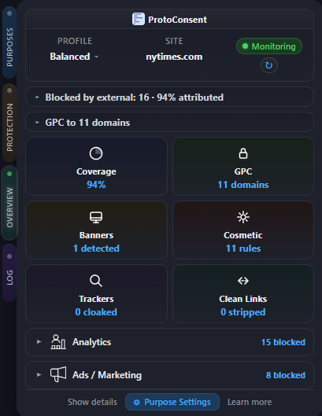
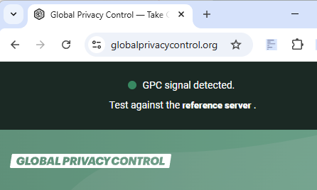
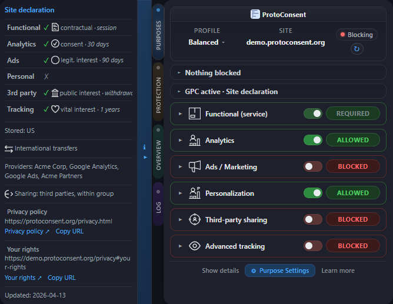

Read preferences
Query consent state per site
The SDK returns true, false, or null (extension absent) for each purpose. Per-site only, fully local.
Read user consent preferences directly from the browser. No backend, no identity, no tracking
ProtoConsent is a browser extension that lets users define how different data-use purposes should be treated on each site, then applies those rules locally in the browser. Per-site profiles, network-level blocking, conditional GPC signals, consent banner auto-response, and optional enhanced protection - all running on the user's device with no backend.

The SDK returns true, false, or null (extension absent) for each purpose. Per-site only, fully local.
Use the signal to load or skip scripts, simplify banners, or respect user choices without guessing. The extension enforces at the network level regardless. The SDK lets you adapt gracefully.
ProtoConsent sends the Sec‑GPC header automatically when privacy‑relevant purposes (ads, third‑party sharing, advanced tracking) are denied for a site.
Unlike browser‑wide GPC toggles, ProtoConsent's signal is conditional and per‑site: it only fires when your purpose choices justify it. GPC already has legal weight under California's CCPA/CPRA and is under discussion in the EU.
Check it live on the demo site →

Best for: publishers, static sites, any website.
Publish a .well-known/protoconsent.json file at your domain root declaring which purposes your site uses, what legal basis it claims, and which third parties it integrates. The extension reads this file and displays it in a side panel with Consent Commons icons. One static file is all it takes.

Read the spec → · JSON Schema → · Generate your file → · Validate your file → · CI action → · Demo site source →
Best for: any website that wants to read user preferences and adapt accordingly.
// Load the SDK (ES module, MIT licensed) import ProtoConsent from 'protoconsent.js'; // Check a single purpose const allowed = await ProtoConsent.get('analytics'); if (allowed) loadAnalytics(); // Or read all purposes at once const all = await ProtoConsent.getAll(); // { functional: true, analytics: false, ads: false, ... }
Returns null if the extension is not installed. Safe by default, always graceful.
Full API: get(purpose), getAll(), getProfile().
Website participation is optional and does not affect user-side enforcement.
This section queries the ProtoConsent extension in real time using the SDK protocol. If the extension is installed, your current preferences for protoconsent.org are shown below.
ProtoConsent automatically suppresses consent banners from 31 CMP frameworks, including OneTrust, Cookiebot, Quantcast, and IAB TCF v2.2. If you encounter a site where the consent banner still appears, you can help expand coverage.
Questions or integration ideas? Open an issue or contact us.